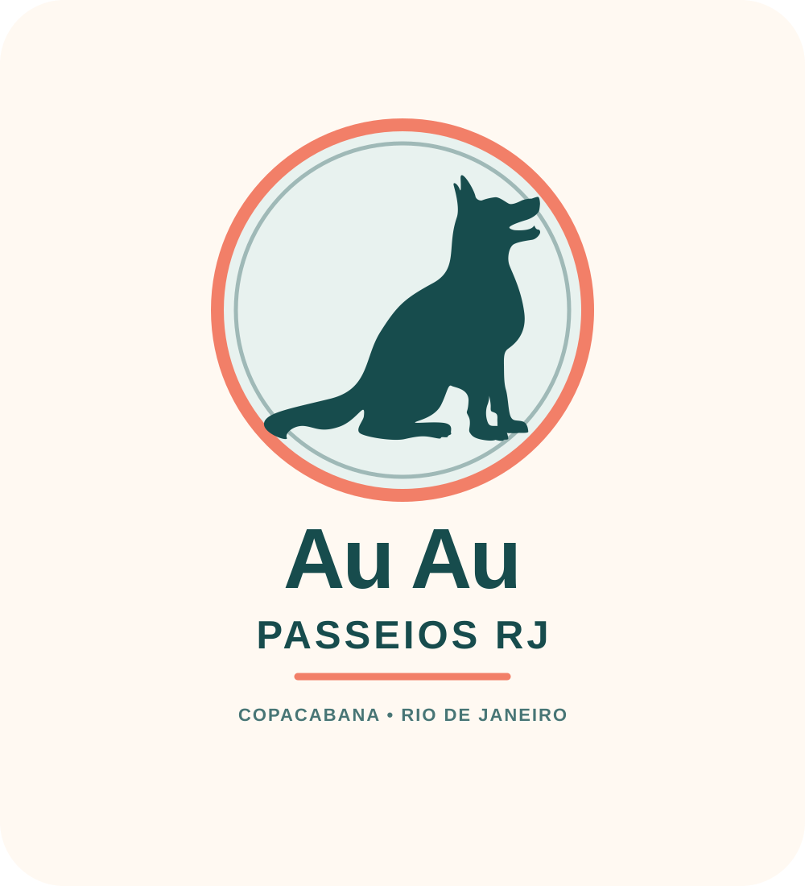
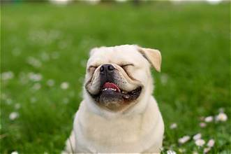
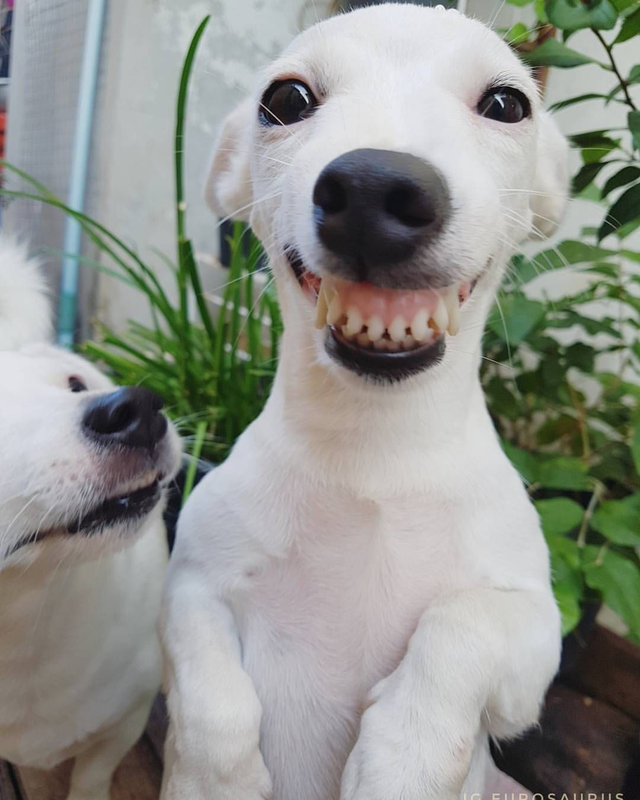

Ritmo do seu cão
Combinamos duração e rotina conforme a energia e as necessidades dele.
DOGWALKER EM COPACABANA · ZONA SUL
Mais passeio, cheirinhos e alegria no dia do seu cão — com cuidado de verdade, pertinho de casa.
Atendimento local e próximo
Copacabana e bairros selecionados da Zona Sul
 Passeios com atenção individual
Passeios com atenção individual

UM PASSEIO DO JEITO DELE
Seu cão ganha um passeio pensado para o ritmo, o porte e a personalidade dele. Você recebe notícias e uma atualização ao final — para acompanhar cada voltinha com tranquilidade.
Me conte sobre seu cão ↗Combinamos duração e rotina conforme a energia e as necessidades dele.
Alinhamos os cuidados, o trajeto e os combinados antes do primeiro passeio.
Você recebe uma atualização para saber como foi o passeio.
PASSEIOS QUE CABEM NA ROTINA
Atendimento combinado com você, perto de casa e com atenção aos detalhes.

Um primeiro encontro para conhecer o cão, conversar com você e combinar os cuidados.
Vamos marcar ↗
RELATOS DOS TUTORES
Um espaço para compartilhar experiências de passeios com carinho, cuidado e atenção à rotina de cada cão.
Textos demonstrativos: substitua por depoimentos reais, com autorização dos tutores.

“A Nina voltou feliz e tranquila. Adorei receber notícias durante o passeio.”

“O Thor tem bastante energia, e o passeio no ritmo dele fez toda diferença.”

“Ter alguém de confiança aqui em Copacabana deixou minha rotina mais leve.”
SIMPLES DO COMEÇO AO FIM
Um processo leve e transparente para você e seu cão se sentirem bem.
Falar sobre o primeiro passeio ↗Conte o bairro, a rotina e um pouco sobre o seu cão.
Conversamos sobre horários, duração, cuidados e valor.
Faço o passeio combinado e depois envio uma atualização.
 ATENDIMENTO LOCALZona Sul
ATENDIMENTO LOCALZona SulPERTINHO DE VOCÊ
Atendimento com foco em Copacabana e consulta de disponibilidade para bairros próximos da Zona Sul. A proximidade ajuda a deixar a rotina mais prática para você e para o seu cão.
Consultar disponibilidade na minha rua ↗VAMOS CONVERSAR?
Me conte o que ele gosta e vamos combinar um primeiro encontro.